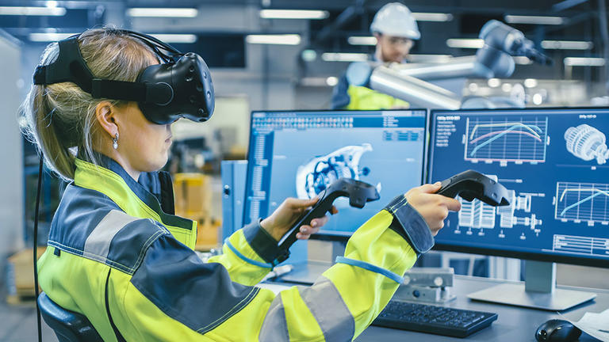

VR & AR Experience
VR & AR Experience
Virtual Reality in Marketing Research
If a person was a marketing researcher, then they might not be knowing that there are many difficulties in making the final product and fulfil the requirements of the project stakeholders. As they always have changed even if we give them our final products. So, to overcome this VR provides a simulation. That helps the project stakeholders to study, suggest if any changes or fixes are required, this all at an early stage so that you do not have to suffer after the product is ready and make the changes. Using VR will help in saving both times as well as cost and will also help in an as successful product launch. The toughest thing that most of the businesspeople face today. The important and the toughest thing that most of the business plan face is how they should train their employees. If they want employees to be trained well and in an industrial way, then they should include the VR training. We all know that proverb “tell me, I’ll remember. Involve me, I’ll understand”. Hence should give employees the training in which they get involved in. For this ensures and can involve VR techniques, which will give 3D experiences, and will help employees providing them real-world experience and real-world business problems. Using VR technology for training will train them with simulation and make them business-friendly and ready. Hence seeing the above parameters, now must decide that is not virtual reality necessary for the business.
VR Will Help in Promoting Hotels, Tourism, Resorts etc.
If someone has a tourism business and is willing to grow it then they should read the below thing. Virtual reality helps in providing the promo videos that boost tourist attractions and its interests and it also boosts the facilities that a resort or hotel can offer. Virtual Reality will help increase bookings and that will indirectly help in increasing the business.
VR a Big Change in the Automobile Industry
If someone has an automobile industry that only a few models are kept in display, and it is also difficult to show all the models to a particular customer. Also, if the customer is confused between two or three-car then it is exceedingly difficult and it will be A wastage of time to take the drive of all three and check all the features of three and choose one. So, to decrease the effort and increase the options for customers, virtual reality has given great advantage as it views the car in a 360-degree view. So that the customer can take test drives, select the exterior/interior, explore features, switch on lights, explore the accessories, etc this all through interactive experiences. If giving this experience to customers, then surely it will increase the business.